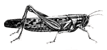

Bottled for your pleasure
POTTED AUTOBIOGRAPHY

Hello. I'm a designer. I also do plenty of writing, speaking, and sleeping. I'm based in Nottingham, England, but my work means I'm often found in all sorts of other fine places. Please read on →
Dropping science like it's hot
THE SPLENDID JOURNAL

§
Yet another year in reviewHaving summarised my year as both 2010 and 2011 drew to a close, I'm learning to enjoy writing these reviews now. Early worries about being... More →
Catalogued nocturnal matter
EXHAUSTIVE ARCHIVES

- 862—Yet another year in music
- 864—iPhone video experiment
- 861—Creative Mornings NYC
- 860—Make something you love
- 859—AIGA Design Camp
Mr. Collison is currently
RECEIVING YOUR EMAILS

Opinions & queries this wayDrop me a line if you wish. I'm always interested in new projects and opportunities and will of course do my best to reply to your emails swiftly and efficiently. →

A very proud member of those
FICTIVE KIN

Mr. Collison organises some
NEW ADVENTURES

Images from the field
FLICKR PHOTOGRAPHS

The tweets of @colly
FOLLOW ME ON TWITTER

Conference and speaking history
LANYRD PROFILE
Bringing fans and bands together
RUSHMORE FM

Sneaky-peeks at my designs
DRIBBLE SHOTS

Retro-filtered iPhone Photos
INSTAGRAM PHOTOS

Streaming day and night
RDIO PROFILE

Ignoring old acquaitances
BLOODY FACEBOOK

Collected internet oddments
GIMME BAR

I've been, therefore I am
FOURSQUARE CHECKINS

Slides from my presentation
SPEAKER DECK

Playing on the gramophone
LAST.FM SCROBBLES

It's better than Linkedln y'know
ZERPLY PROFILE

Amateurish moving pictures
VIMEO CHANNEL